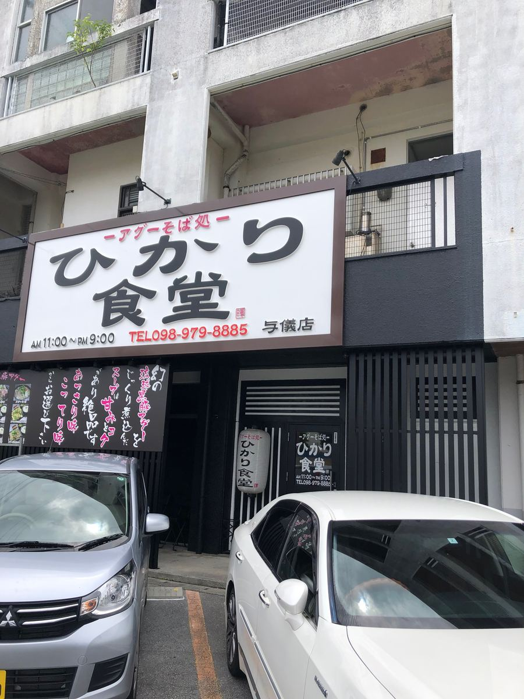
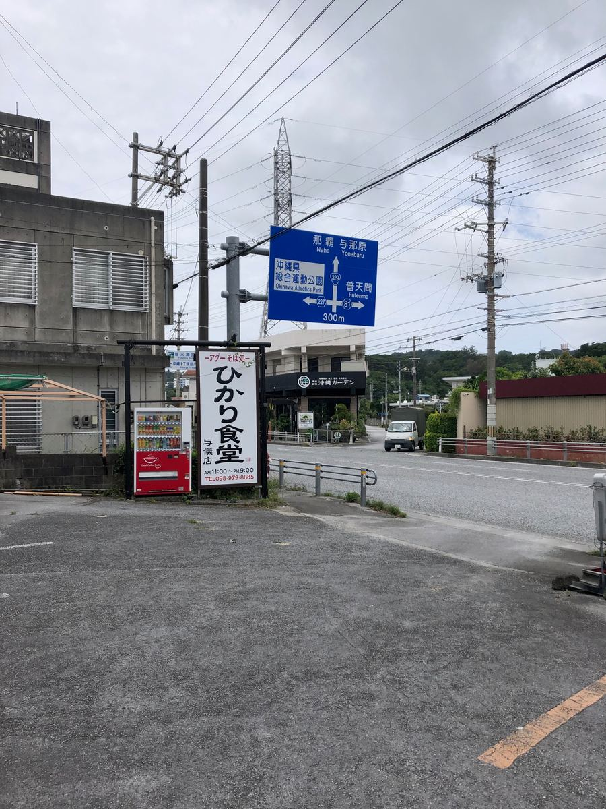
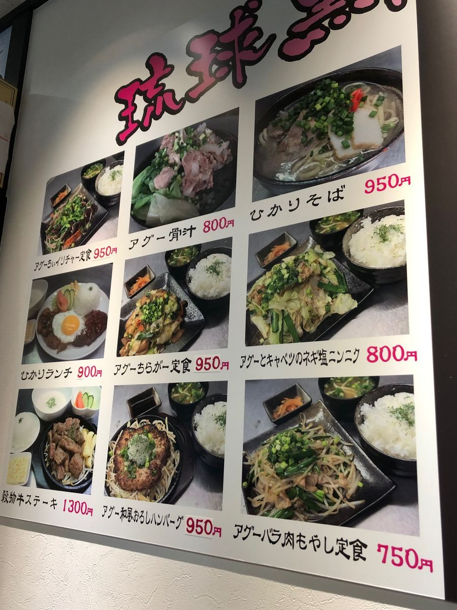
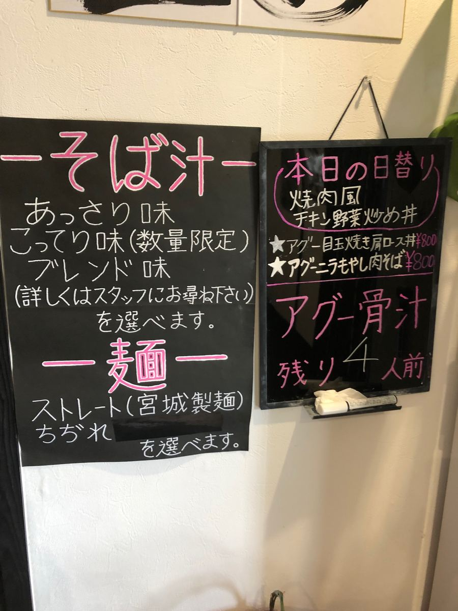
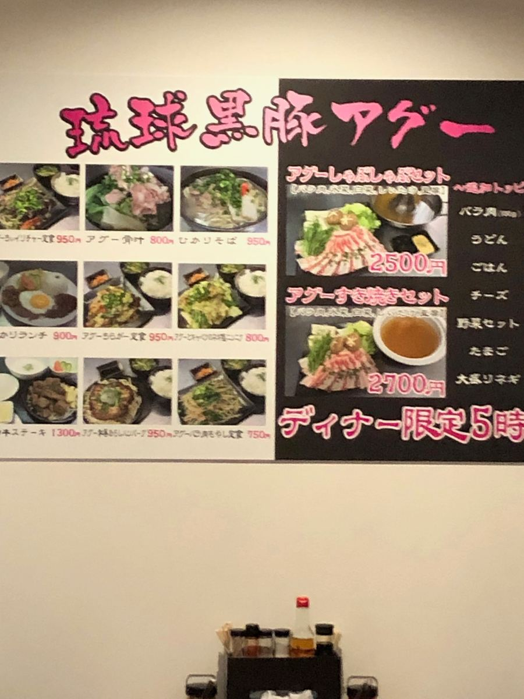
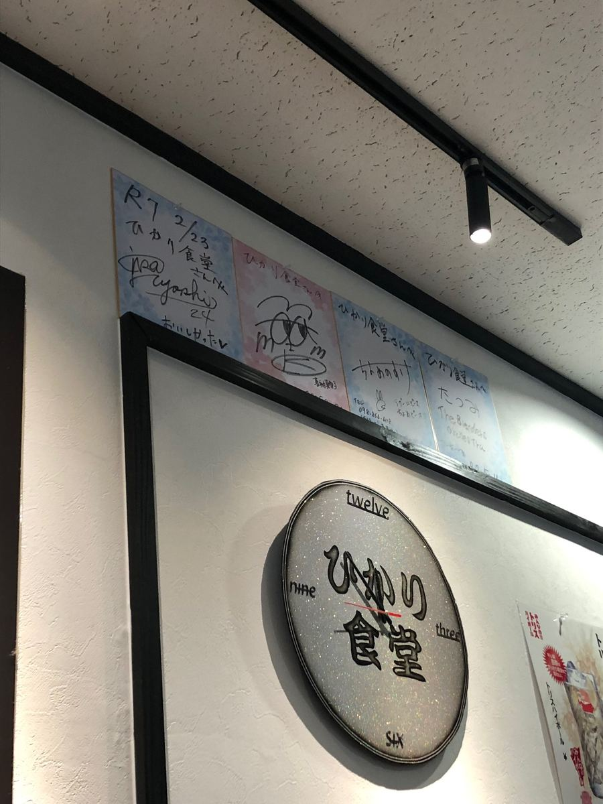
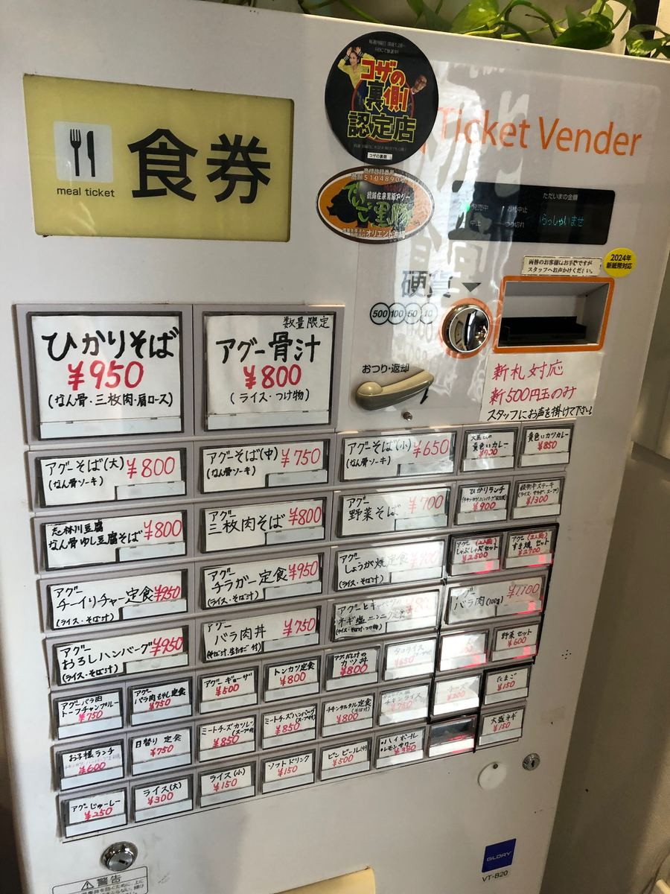
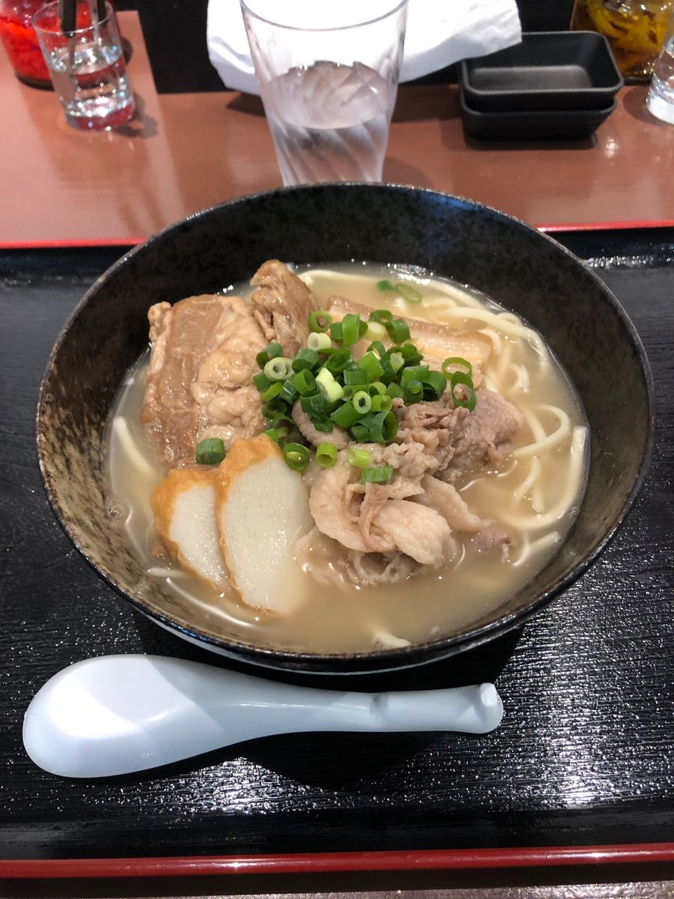
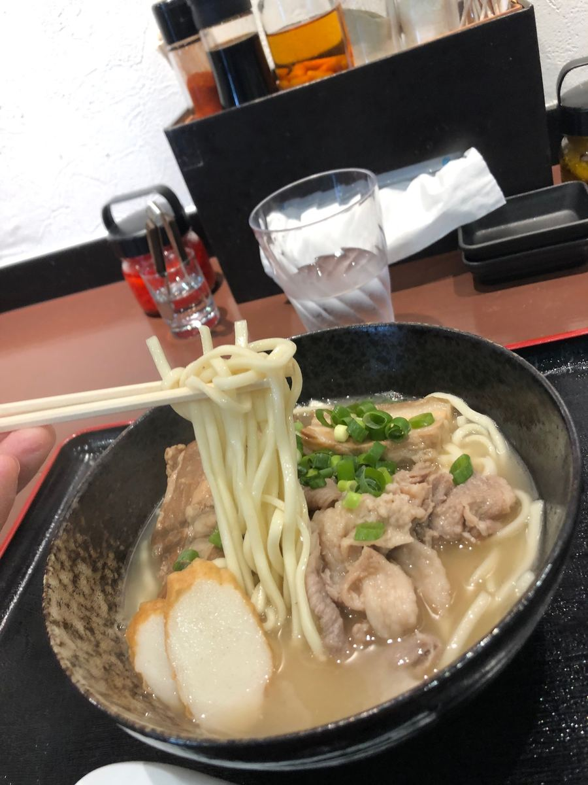
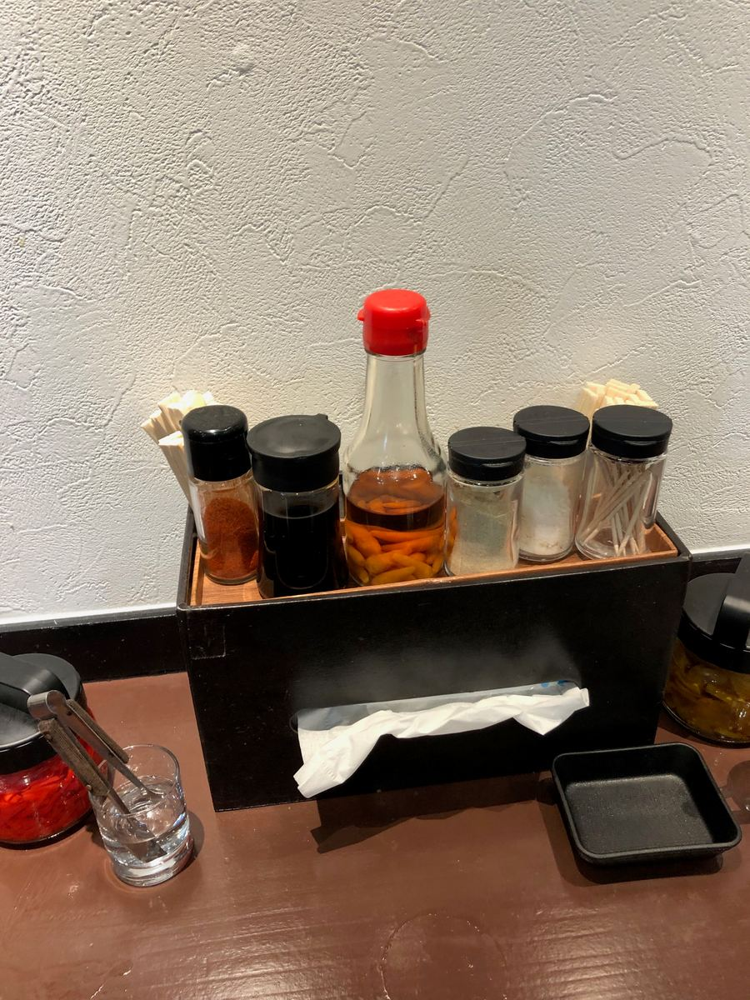

This time I visited "Agu Soba-dokoro Hikari Shokudo Yogi Branch" in Yogi, Okinawa City 🍜 I ate here in June 2025 😄

Actually, this is my first time at Hikari Shokudo since visiting the Meido branch in Okinawa City. The agu broth from that visit left an impression, and the Yogi branch is a relatively new shop that opened in 2024 ✨

Partly because I visited at lunchtime, the shop was quite bustling with local customers. It felt like a community-rooted eatery where neighbors drop in for lunch rather than tourists, and a shop with this kind of atmosphere is reassuring 😊

Now, I decided to order the "Hikari Soba," which is also the shop's signature menu item. The interesting thing about Hikari Shokudo is that you can choose the soup and noodles yourself. You can choose the soup from three types, "light," "rich," and "blended," and the noodles from "straight" and "wavy."

The menu is lined with dishes using Ryukyu black pork agu, and it's fun just to look at 🤤


Since I was there, this time I had them combine the "rich" soup, which is said to be limited in quantity, with "straight" noodles. When something is described as limited quantity, you can't help wanting to order it (lol)

And here's the bowl that arrived. A bowl with agu pork broth that looks absolutely delicious ✨

First, the soup. As you'd expect from choosing rich, the agu broth is fairly strong and the pork flavor comes through strongly. It had a taste that pushed the pork feel way up front 🐷
The noodles are medium-thick straight noodles. Boiled on the soft side, they had a gentle mouthfeel and slid down easily 🍜 They went well enough with the rich soup too.

The toppings are braised pork belly (sanmai-niku), soft-bone pork ribs (nankotsu soki), and pork shoulder loin, and it's nice that there are three kinds of meat on top. However, the seasoning of the meat itself was light. Honestly, I felt a fair amount of sinewy texture in each, and there were a few so-so parts ^^; It's satisfying to eat, so I thought I'd have liked it better if it were a bit more fall-apart tender.

Rating (9/15): My honest impression overall is... hmm, the flavor was just average, to be frank 😅 The fun of choosing the soup and noodles is there, and the rich agu broth did come through to a fair degree, but my impression is that it didn't reach the point of an outstanding "wow!" this time. Even so, it's understandable that it's this bustling with locals, and with light or blended soup or wavy noodles the impression might change, so I'd like to try those next time 😄
Noodles: ★★★☆☆（3）
Soup: ★★★☆☆（3）
Toppings: ★★★☆☆（3）